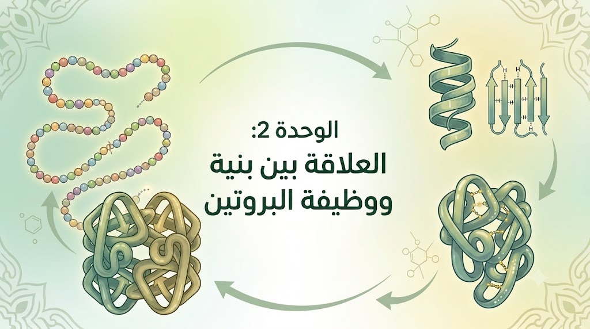

الموسوعة الجزيئية: العلاقة بين بنية ووظيفة البروتين
[ مساحة إعلانية علوية ]
01 الوحدة البنائية: الأحماض الأمينية (Amino Acids)
تمثل الأحماض الأمينية الوحدات البنائية الأساسية للبروتين، وهي مركبات عضوية تتميز بوجود وظيفة أمينية قاعدية (-NH2) ووظيفة كربوكسيلية حمضية (-COOH) محمولتين على نفس ذرة الكربون المركزية (ألفا α). يدخل في تركيب البروتينات 20 نوعاً أساسياً من الأحماض الأمينية، ويتحدد التخصص الوظيفي للبروتين باختلاف عدد، نوع، وترتيب هذه الأحماض في السلسلة الببتيدية.
02 البنية الكيميائية العامة وتفصيل الجذر المتغير
تشترك الأحماض الأمينية الـ 20 في بنية عامة واحدة تتكون من كربون مركزي (ألفا α) مرتبط بمجموعة كربوكسيل حرة، ومجموعة أمين حرة، وذرة هيدروجين، بالإضافة إلى **سلسلة جانبية متغيرة (جذر كيميائي R)**. يعتبر هذا الجذر هو المسؤول عن الخصائص الفيزيوكيميائية الفريدة لكل حمض (سواء كان قطبياً محباً للماء أو غير قطبي كاره للماء)، وهو المحرك الأساسي لعملية انطواء وتشكيل البنية الفراغية للبروتين.
03 تصنيف الأحماض الأمينية حسب السلوك الكهربائي
تصنف الأحماض الأمينية بناءً على طبيعة وعدد المجموعات الوظيفية القابلة للتأين الموجودة في جذورها الجانبية (R) إلى ثلاثة أصناف رئيسية:
1. أحماض حامضية (Acidic)
يحتوي جذرها R على وظيفة كربوكسيلية إضافية (-COOH).
أمثلة: Glu, Asp
2. أحماض قاعدية (Basic)
يحتوي جذرها R على وظيفة أمينية إضافية (-NH2).
أمثلة: Lys, Arg, His
3. أحماض متعادلة (Neutral)
جذرها R خالٍ من الوظائف الحمضية والقاعدية الإضافية.
أمثلة: Ala, Val, Ser
04 السلوك الأمفوتيري (الحمقلي) للأحماض الأمينية
تتميز الأحماض الأمينية بـ **الخاصية الأمفوتيرية (الحمقلية)**، وهي سلوك الحمض كـ **قاعدة** في الوسط الحمضي (باكتساب بروتون H+ وتأين المجموعات الأمينية لتصبح بشحنة موجبة)، وسلوكه كـ **حمض** في الوسط القاعدي (بفقدان بروتون H+ وتأين المجموعات الكربوكسيلية لتصبح بشحنة سالبة)، وتتحدد الشحنة الكهربائية للحمض بناءً على درجة pH الوسط مقارنة بنقطة تعادله الكهربائي pHi.
05 نقطة التعادل الكهربائي (pHi) وأهميتها
لكل حمض أميني درجة pH خاصة تسمى **نقطة التعادل الكهربائي (pHi)**. عندما يكون درجة الحموضة مساوية لنقطة التعادل (pH = pHi)، يوجد الحمض الأميني على شكل **أيون ثنائي القطب (Zwitterion)** حيث تتأين المجموعتان الكربوكسيلية والأمينية معاً، وتكون الشحنة الإجمالية للحمض معدومة (0). في هذه الحالة، لا يهاجر الحمض الأميني نحو أي من القطبين في جهاز الهجرة الكهربائية (Electrophoresis)، وهي الخاصية المعتمدة لفصل الأحماض الأمينية ونسبها.
06 آلية تشكل الرابطة الببتيدية (Peptide Bond)
تنشأ الرابطة الببتيدية نتيجة تفاعل تكاثف بين المجموعة الكربوكسيلية للحمض الأميني الأول والمجموعة الأمينية للحمض الأميني المجاور، مع تحرير جزيء ماء (H2O). تعتبر هذه الرابطة تساهمية صلبة وقوية (ذات مميزات رابطة مضاعفة جزئياً)، وتشكّل الهيكل الفحمائي الأساسي الذي يربط الأحماض الأمينية ببعضها لتكوين السلسلة الببتيدية.
07 مستويات التنظيم الفراغي للبروتين
أ. البنية الأولية (Primary Structure)
تمثل البنية الأولية **أبسط تتابع خطي** غير وظيفي للأحماض الأمينية المرتبطة ببعضها حصرياً بوساطة **روابط ببتيدية تساهمية**. تُعتبر البنية الأولية المخطط الوراثي المباشر للبروتين، حيث أن عدد، نوع، وترتيب الأحماض فيها هو الذي يحدد بدقة أماكن نشوء الروابط الكيميائية الأخرى المسؤولة عن الانطواء الفراغي الموالي.
ب. البنية الثانوية (Secondary Structure)
تنتج البنية الثانوية عن انطواء والتفاف السلسلة الببتيدية الأولية في مناطق محددة لتأخذ شكل **حلزون ألفا (α)** أو **ورقة مطوية بيتا (β)**. يستقر هذا المستوى التنظيمي بنشوء **روابط هيدروجينية** بين مجموعات C=O ومجموعات N-H التابعة للهيكل الفحمائي للسلسلة الببتيدية، دون تدخل جذور الأحماض الأمينية (R).
ج. البنية الثالثية (Tertiary Structure)
تنتج البنية الثالثية عن انطواء السلسلة الببتيدية التي تحتوي على بنيات ثانوية (ألفا α وبيتا β) في الفراغ، بفضل وجود **مناطق انعطاف**. تسمح هذه المناطق بتراكب البنيات الثانوية وتقارب الجذور لتتشكل الروابط الكيميائية، ليتخذ البروتين شكلاً كروياً أو ليفياً مستقراً، وتعتبر البنية الثالثية المستوى الأدنى لاكتساب التخصص الوظيفي (مثل الإنزيمات والمستقبلات).
د. البنية الرابعة (Quaternary Structure)
تتكون البنية الرابعة من اتحاد سلاسل ببتيدية متعددة (تسمى كل منها تحت وحدة Subunit)، وكل تحت وحدة تمتلك بنية ثالثية قائمة بذاتها. ترتبط هذه تحت الوحدات ببعضها بوساطة **روابط ضعيفة غير تساهمية** (هيدروجينية، شاردية، وتآثرات كارهة للماء)، ومثال ذلك جزيء الهيموغلوبين الذي يتكون من 4 تحت وحدات.
08 الروابط الكيميائية الضامنة لاستقرار البنية الثالثية
يعتمد استقرار البنية الثالثية على أربعة أنواع من الروابط الكيميائية تنشأ تحديداً **بين جذور الأحماض الأمينية (R)** المتباعدة خطياً والمتقاربة فراغياً:
- الجسور ثنائية الكبريت : روابط تساهمية قوية تنشأ بين جذور حمض السيستئين (Cys).
- الروابط الشاردية : تجاذب كهربائي بين الجذور الحامضية القطبية السالبة والقاعدية الموجبة.
- الروابط الهيدروجينية : تنشأ بين الجذور القطبية غير الشاردية.
- تجاذب الجذور الكارهة للماء: تتجمع الجذور الكارهة للماء نحو الداخل مبتعدة عن الوسط المائي.
09 تجربة أنفينسن (Anfinsen) والدليل القاطع
أجرى العالم أنفينسن تجارب تاريخية على إنزيم **الريبونوكلياز (RNase)** باستخدام مادتين: **اليوريا (Urea)** لكسر الروابط الضعيفة، و**ميركابتويثانول** لاختزال الجسور ثنائية الكبريت. أثبتت التجربة أنه عند إزالة هذين العاملين يستعيد الإنزيم بنيته الفراغية ونشاطه الإنزيمي تلقائياً بنسبة 100%، مما أثبت علمياً أن **المعلومة الوراثية المحددة لتتابع الأحماض الأمينية هي المسؤولة عن تحديد البنية الفراغية وبالتالي الوظيفة**.
10 العلاقة بين الطفرات المورثية وفقدان الوظيفة
أي طفرة وراثية تؤدي إلى تغيير في تتابع النكليوتيدات على مستوى المورثة (ADN) سينتج عنها تغيير في نوع أو موقع حمض أميني واحد أو أكثر في السلسلة الببتيدية. هذا التغيير قد يمنع تشكل رابطة كيميائية ضرورية لاستقرار البنية الفراغية، مما يسبب تشوهاً في البنية وفقداناً للتخصص الوظيفي، كاستبدال حمض الغلوتاميك بالفالين (Valine) في السلسلة بيتا (β) للهيموغلوبين مسبباً مرض فقر الدم المنجلي (Sickle Cell Anemia).
11 عوامل المسخ (Denaturation) وتأثير الوسط
تؤدي العوامل الفيزيائية والكيميائية القاسية إلى **مسخ (تخريب) البروتين**:
- درجة الحرارة العالية: تفكك الروابط الضعيفة (الهيدروجينية والتآثرات الكارهة للماء) مما يفقده بنيته الفراغية دون المساس بالروابط الببتيدية.
- تغيرات درجة الحموضة (pH) المتطرفة: تغير الحالة الكهربائية للمجموعات المتأينة في الجذور، مما يلغي الروابط الشاردية والهيدروجينية.
آلية مسخ البروتين وفقدان البنية الفراغية بالحرارة والـ pH

12 النمذجة الحاسوبية ودراسة البروتين ببرنامج Rastop
تُستغل البرمجيات ثلاثية الأبعاد مثل Rastop في دراسة وملاحظة البنيات الفراغية للبروتينات بمختلف نماذجها (النموذج المكدس، الشريط، السلكي...). يتيح البرنامج تحديد مواقع الأحماض الأمينية المتدخلة في تشكيل الموقع النشط للإنزيمات، ودراسة نوع الروابط القائمة بينها، ومحاكاة تأثر البروتين بالطفرات بدقة عالية.
ملاحظة المراجعة النهائية:
ركز دائماً في البكالوريا على ربط نوع الرابطة الكيميائية بالحمض الأميني المتدخل (مثل الجسور ثنائية الكبريت مع السيستئين) والربط الدقيق بين البنية الفراغية والنشاط الوظيفي.
[ مساحة إعلانية سفلية ]